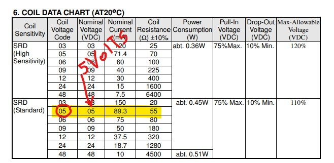
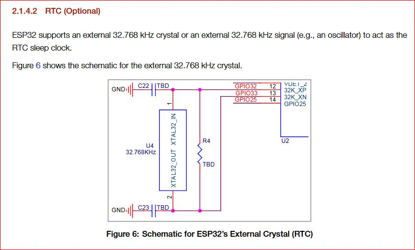
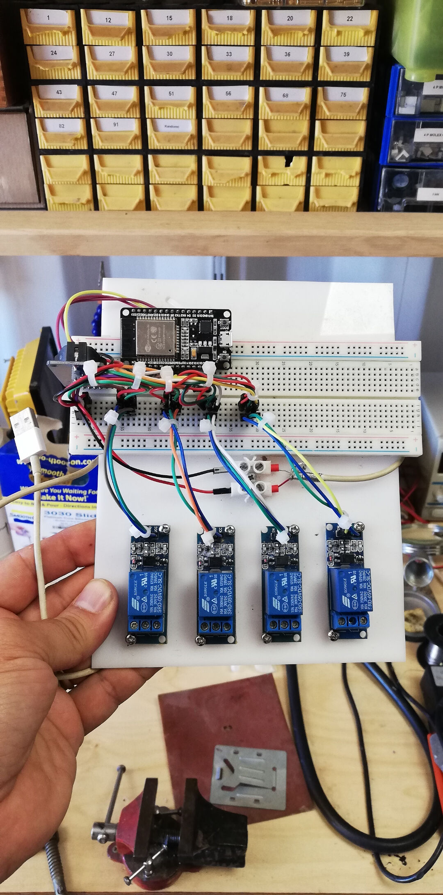
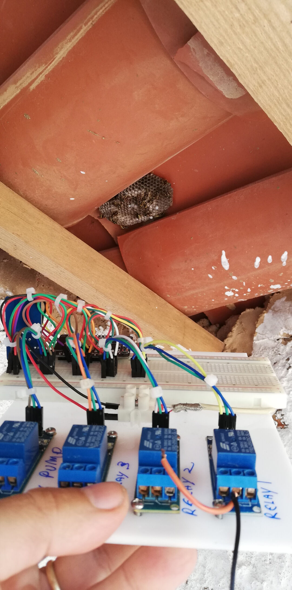
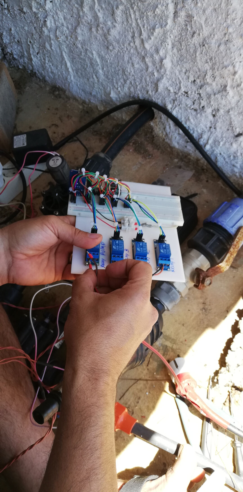

Final Project Diary and Concept Update
6th of June, 2020
Today I decided to change my final project again!
I needed to have irrigation working in the farm, I did not need more chicken right now, so well I changed again. It doesn't mean I gave up on the Chicken egg incubator. It only means I might have TWO final projects :-). Well maybe not, the reality is that I will focus on the irrigation, my fruit trees need the water, the greenhouse too. I have so much need for it right now and I need it to to work well that it makes it really worth the change.
So no Chickens! YES WATER!, maybe also Chickens.
Design of my new proposition
As I am writing this there are no current design files, there is a sketch of a code and there is a prototype on a breadboard!
There are in the other hand requirements for the hardware and for the software:
Software Requirements and stage
- Simplify the code creating more functions;
- try to separate the HTML part for a cleaner code;
- Improve the appearance/Interface of the code;
- Add readings to HTML;
- Add a log of occurrences like over current;
- Add more safety for the equipment;
- Add a phone interface (APP);
- Add function to set current time;
- Add renaming function to each relay so one can relate the relay to the area of interest or at least rename relays to actual areas of the farm.
Design Requirements and situation
- Need to be water resistant at least;
7th of June, 2020
As of today 07th of June 2020 the development is like this.

The code running on this setup can be found on the Fabfarm Github Autovalve
Shakeel one of our volunteers managed to create a version that runs on a ESP8266 that can be found in the same repo here. Due to the Pandemic situation he left us in a hurry and did not have time to test his code so it worked but not stable due to the fact that he heroically attempted to share the analog pin with the wifi, leading to drops in the wifi that rendered using the system almost impossible. This is the code that I started with.
8th of June, 2020
After many hours trying to understand the code I managed to port Shakeel's code to a ESP32 and also split the file with each function on a separate file.
In this video I show the progress I did so far in the merging the codes and having it work in the ESP32
To port the code to ESP32 might be simple for a programmer but it took many hours for me.
Steps:
- separated everything that was a function already to its own file to make it more readable;
- Opened then another session of the Arduino IDE and started copying every part of the code line by line to the new session, in this session I renamed the main file to "esp32irrigation"
- remapped the pins to ESP32 pins
- run beautify on the HTML on Brackets
- organized the code so pins are on top
- created variables for the RTC pins
- Commented parts of the code that print error to the serial monitor
The code is to big for displaying on the HTML so I will leave a link for the state of the code as this early morning: codehere.
Here in this video you can see the testing setup of the current irrigation system of the farm
9th of June, 2020
Today after testing the relays I realized that some relays work some not. After testing on the lab power supply directly with 5volts applied to the signal pin I believe that this is due to low voltage being supplied by the esp32 or the signal voltage.
I watched then the Great Scott's video on Youtube about relays and optocouplers.
I will make sure the relays have at least a 5 volts power supply. Wich are their required voltage acording to the datasheet. The signal should be fine at 3.3. Will be tested in situ.

The other point is the current reading that is completely wrong. In other to have the irrigation system working I will have to run it without current sensing until debugged.
10th of June, 2020
After the tests, the conclusion to the voltage problem is that the esp32 should not supply power to the relay, that should be supplied from an external power source, set at 5volts. The signal can come from the esp32 unchanged but the esp 32 should share the same ground.
more changes in the code:
- increased the interval the time is displayed from 3000 to 5000 ms (5s) in the variable
RTCtimeInterval - increased the interval the setup is displayed from 10000 to 30000 ms (30s) in the variable
configTimeInterval - Set recognizable names to the relay's html interface
- Cleaned up a bit more on the serial monitor by removing seconds from the setting display
I will place the setup back to work today in the morning and set times for each irrigation and field test the esp32 irrigation module.
Strangely the external RTC clock is not keeping accurate time. I will look into utilizing internal clock with external battery in case of power failure.
According to this closed issue discussion at the esp repo at Github and this esp accuracy topic the internal clock will delay "Internal RTC clock frequency error is about 5%", this can be solved with a external crystal of 32.768KHz crystal assembled according to the schematics below:
Another solution would be to have the esp always connected to the Internet and grabbing the time from the Internet updates to compensate for inaccuracy.

After wakeup update
Today I went into installing the temporary testing setup. I troubleshoot a few problems.
- Setup was not working when disconnected from computer: -solution power wiring was not correct, ended up connecting 2 USB cables one for the ESP32 and another for the relays, they both share the same ground, also I might have solved the RTC clock problem as well with the same approach.
This is how the prototype looks now:



After the tests I went back to the code for more customization.
I first watched a series of videos on Youtube about functions really create and then started creating even more functions.
Basically I went into looking how to reduce code repetitions and how to send a value to a function
From the code available I created this function:
void turnOffRelay(int valveHere){
// wait then turn valve relay OFF
Serial.print("Waiting ");
Serial.print(waitTimeValveOff / 1000);
Serial.println("s before deactivating Valve Relay 3.");
delay(waitTimeValveOff);
digitalWrite(valveHere, LOW);
valveHere = 0;
Serial.print("*** Valve Relay ");
Serial.print(valveHere);
Serial.println("3 turned OFF ***");
}Every time I want to call this function I use
{
int valveHere = valveRelay3;
turnOffRelay (valveHere);
}The reason I use the {} is because I had to declare the local variable valveHere this way I could replace only that piece of code each time I called the function.
Technically calling that function would be just having this code here turnOffRelay (valveHere); but that would not work alone as I am always replacing the valve relay pin with int valveHere = valveRelay3;
I still haven't tested the behaviour but at least it compiles :-)
Footnote
Links: